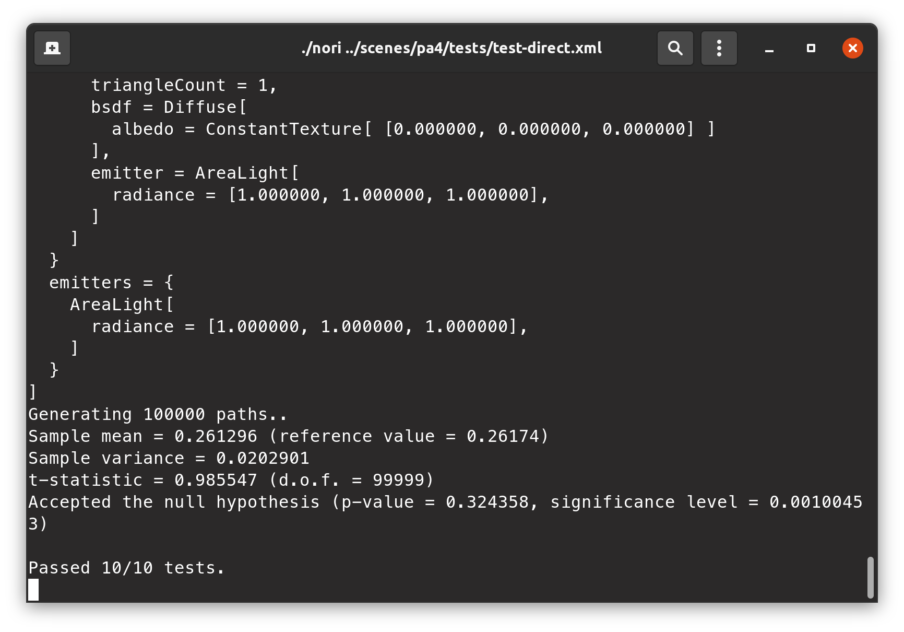
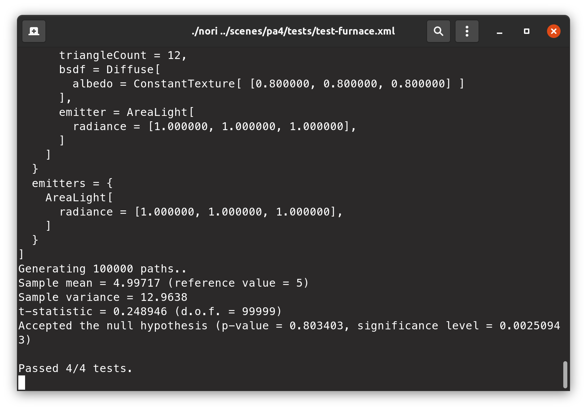
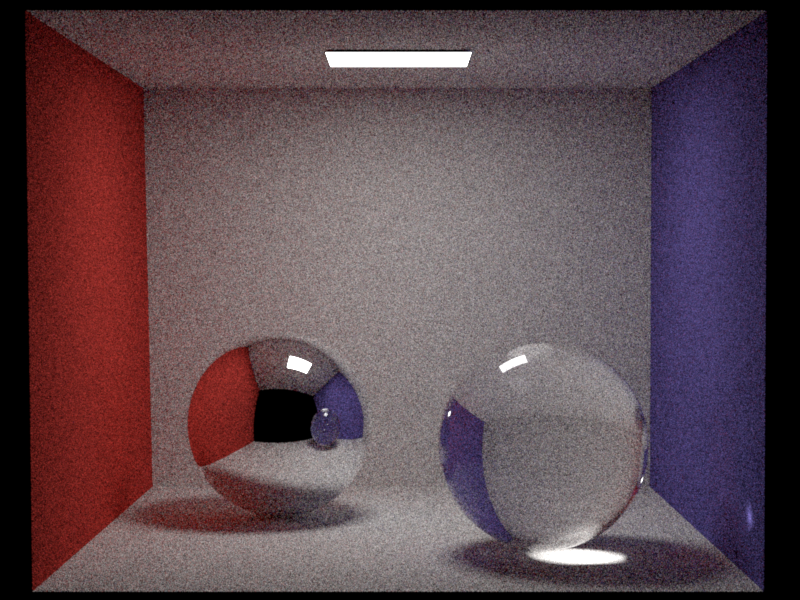
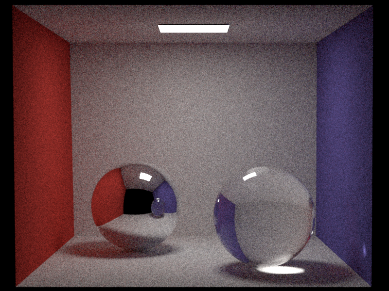
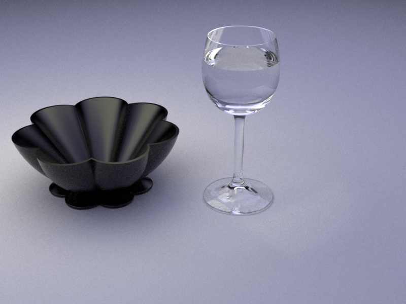

Part 1: Dielectric BSDF
Part 2: Path Tracing
path_mats Implementation
see src folder
path_mis Implementation
see src folder
Validation
Test direct
Test furnace
Cornell box scene
 


Table scene


Part 3: Photon Mapping
TODO: report problems, comments, and time spent...
Implementation
TODO: report implementation
Validation
TODO: Show a 2-way comparison for each of the scenes...
Cornell box scene


Table scene
Clocks scene